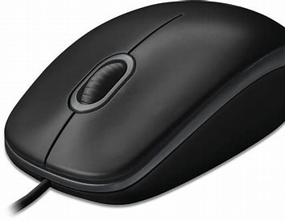

mouse the first computer mouse was first invented by and american engineer named douglas engelbart in the year 1964 mouse is a small device for giving information to the computer, the way of touching the button thats on it and that sound is called a [click] when using a mouse it shows something like a arrow on the screen and by moving the mouse easliy the arrow will move and it goes to the place you want it to go